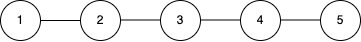

| Category | Difficulty | Likes | Dislikes |
|---|---|---|---|
| Algorithms | Medium | 511 | 57 |
array | hash-table | depth-first-search | breadth-first-search | union-find | graph | heap-priority-queue | ordered-set
facebook | salesforce | google | zeta | amazon
You are given an integer c representing c power stations, each with a unique identifier id from 1 to c (1‑based indexing).
These stations are interconnected via n bidirectional cables, represented by a 2D array connections, where each element connections[i] = [ui, vi] indicates a connection between station ui and station vi. Stations that are directly or indirectly connected form a power grid.
Initially, all stations are online (operational).
You are also given a 2D array queries, where each query is one of the following two types:
[1, x]: A maintenance check is requested for station x. If station x is online, it resolves the check by itself. If station x is offline, the check is resolved by the operational station with the smallest id in the same power grid as x. If no operational station exists in that grid, return -1.
[2, x]: Station x goes offline (i.e., it becomes non-operational).
Return an array of integers representing the results of each query of type [1, x] in the order they appear.
Note: The power grid preserves its structure; an offline (non‑operational) node remains part of its grid and taking it offline does not alter connectivity.
Example 1:
Input: c = 5, connections = [[1,2],[2,3],[3,4],[4,5]], queries = [[1,3],[2,1],[1,1],[2,2],[1,2]]
Output: [3,2,3]
Explanation:

{1, 2, 3, 4, 5} are online and form a single power grid.[1,3]: Station 3 is online, so the maintenance check is resolved by station 3.[2,1]: Station 1 goes offline. The remaining online stations are {2, 3, 4, 5}.[1,1]: Station 1 is offline, so the check is resolved by the operational station with the smallest id among {2, 3, 4, 5}, which is station 2.[2,2]: Station 2 goes offline. The remaining online stations are {3, 4, 5}.[1,2]: Station 2 is offline, so the check is resolved by the operational station with the smallest id among {3, 4, 5}, which is station 3.Example 2:
Input: c = 3, connections = [], queries = [[1,1],[2,1],[1,1]]
Output: [1,-1]
Explanation:
[1,1]: Station 1 is online in its isolated grid, so the maintenance check is resolved by station 1.[2,1]: Station 1 goes offline.[1,1]: Station 1 is offline and there are no other stations in its grid, so the result is -1.
Constraints:
1 <= c <= 1050 <= n == connections.length <= min(105, c * (c - 1) / 2)connections[i].length == 21 <= ui, vi <= cui != vi1 <= queries.length <= 2 * 105queries[i].length == 2queries[i][0] is either 1 or 2.1 <= queries[i][1] <= c